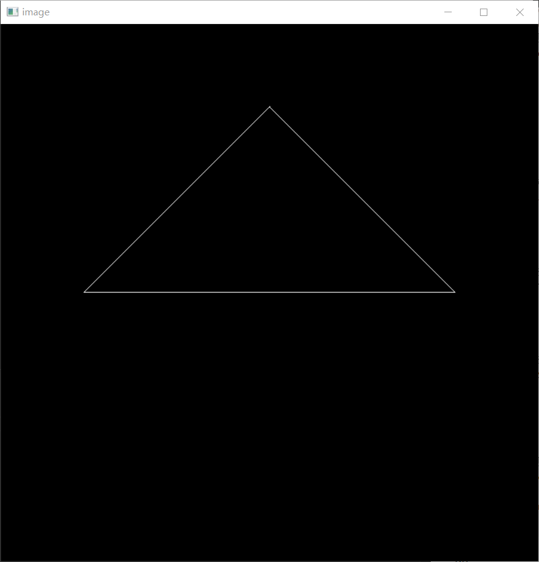

熟悉模型(model)、视角(view)、投影(projection)矩阵的使用
对于空间中的物体，通过以下几个步骤将其投影到二维平面：
这里只需要完成绕z轴的旋转即可，对应的矩阵为：
Eigen::Matrix4f get_model_matrix(float rotation_angle) { Eigen::Matrix4f model = Eigen::Matrix4f::Identity(); // TODO: Implement this function // Create the model matrix for rotating the triangle around the Z axis. // Then return it. Eigen::Matrix4f rotate; rotation_angle = rotation_angle / 180 * MY_PI; //注意三角函数接收的参数是弧度制的，需要转换 rotate << cos(rotation_angle), -sin(rotation_angle), 0, 0, sin(rotation_angle), cos(rotation_angle), 0, 0, 0, 0, 1, 0, 0, 0, 0, 1; model = rotate * model; return model; }
因为给定的视角方向已经正确，只需要平移至原点即可。
对应的平移矩阵为：
Eigen::Matrix4f get_view_matrix(Eigen::Vector3f eye_pos) { Eigen::Matrix4f view = Eigen::Matrix4f::Identity(); Eigen::Matrix4f translate; translate << 1, 0, 0, -eye_pos[0], 0, 1, 0, -eye_pos[1], 0, 0, 1, -eye_pos[2], 0, 0, 0, 1; view = translate * view; return view; }
设n和f是视锥的近点和远点，都为负数(因为看向-)
具体来讲，透视投影矩阵分为三个部分。
Eigen::Matrix4f get_projection_matrix(float eye_fov, float aspect_ratio, float zNear, float zFar) { // Students will implement this function Eigen::Matrix4f projection = Eigen::Matrix4f::Identity(); // TODO: Implement this function // Create the projection matrix for the given parameters. // Then return it. //注意：传入的zNear和zFar都是正数，需手动调整为负 eye_fov = eye_fov / 180 * MY_PI; float n = -zNear; float f = -zFar; float t = tan(eye_fov / 2) * abs(zNear); float b = -t; float r = t * aspect_ratio; float l = -r; Eigen::Matrix4f p2o, orthoScale, orthoTran; //透视转正交 p2o << n, 0, 0, 0, 0, n, 0, 0, 0, 0, n + f, -n * f, 0, 0, 1, 0; //正交移动 orthoTran << 1, 0, 0, -(l + r) / 2, 0, 1, 0, -(t + b) / 2, 0, 0, 1, -(f + n) / 2, 0, 0, 0, 1; //正交缩放 orthoScale << 2 / (r - l), 0, 0, 0, 0, 2 / (t - b), 0, 0, 0, 0, 2 / (n - f), 0, 0, 0, 0, 1; //注意顺序，从右往左 projection = orthoScale * orthoTran * p2o; return projection; }
得到的结果如图：

这一部分并不是需要实现的内容，但为了加深对原理的理解，我们有必要对其代码做解析。
代码在rasterizer.cpp的draw函数中可以找到:
... float f1 = (50 - 0.1) / 2.0; float f2 = (50 + 0.1) / 2.0; ... for (auto & vert : v) { vert.x() = 0.5 * width * (vert.x() + 1.0); vert.y() = 0.5 * height * (vert.y() + 1.0); vert.z() = vert.z() * f1 + f2; }
一般地，对视口变换的矩阵目的是将的平面转换为的屏幕，所以其对应矩阵应为:
需要注意的点是，作为显示器屏幕的xy坐标轴是x轴向下，y轴向右的，如果不进一步转换画出的内容会与预期不符。例如，在经过所有矩阵变换后，用断点查看得到三个顶点的二维坐标变化为：
如果以正常的x向右y向上的平面坐标系，则这些屏幕坐标是完全对应的。但在实际的坐标系中，得到的三角形会是倾斜的。
这里的调整方法是在get_index、set_pixel等函数中进行修改，如下:
int rst::rasterizer::get_index(int x, int y) { return (height - 1 - y) * width + x; } void rst::rasterizer::set_pixel(const Eigen::Vector3f& point, const Eigen::Vector3f& color) { //old index: auto ind = point.y() + point.x() * width; if (point.x() < 0 || point.x() >= width || point.y() < 0 || point.y() >= height) return; auto ind = (height - 1 - point.y()) * width + point.x(); frame_buf[ind] = color; }
核心在于index=(height-1-y)*width+x。对于左上角坐标为(0,height-1)的点，其index=0；对于右上角坐标为(width-1,height-1)的点，其index=width-1;对于右下角坐标为(width-1,0)的点，其index=(height-1)×width+width-1=height×weight-1。这样就完成了坐标系上的转换。
另外一点在于这里对z也进行了修改(本次实验其实用不到，在assignment2中做深度测试时用处较大)，要理解这个变换，我们要从投影变换开始计算。
首先，透视投影矩阵为
所以经过这个变换后，原本相机空间中上的z变为
这里除去的z实际上是变换后的w，在做齐次化。
我们看这里的f和n，满足
(给定的是正数，我们手动转换成了负数)
所以
现在对z'变换，得到
这也就是说,原本上的z转换为了上的z'，对原本的(指比更远)变为了(在正数意义上，z_2''反而更远了)。因此这一步操作的实际意义就是将得到的负数坐标z又转换成了正数，这也就是为什么在后面的assignment中深度检测时判断更近用的是小于号；但远近关系是出现了问题的，这是框架上的问题，使得在作业2中三角形的遮挡关系相反，作业3中小牛屁股对着相机，解决方法有以下2种:
vert.z() = -vert.z() * f1 + f2;
这样也是将坐标从映射到，但远近关系能够保持一致。
在之后的assignment2和3中我们统一使用方法2。
要求实现绕任意过原点的三维向量旋转。
利用旋转定律:
Eigen::Matrix4f get_rotation(Vector3f axis, float angle) { //用Rodrigues旋转定律 angle = angle / 180 * MY_PI; Matrix3f I = Eigen::Matrix3f::Identity(); Matrix3f N, R; N << 0, -axis[2], axis[1], axis[2], 0, -axis[0], -axis[1], axis[0], 0; R = cos(angle) * I + (1 - cos(angle)) * axis * axis.transpose() + sin(angle) * N; Matrix4f result; result << R(0, 0), R(0, 1), R(0, 2), 0, R(1, 0), R(1, 1), R(1, 2), 0, R(2, 0), R(2, 1), R(2, 2), 0, 0, 0, 0, 1; return result; }